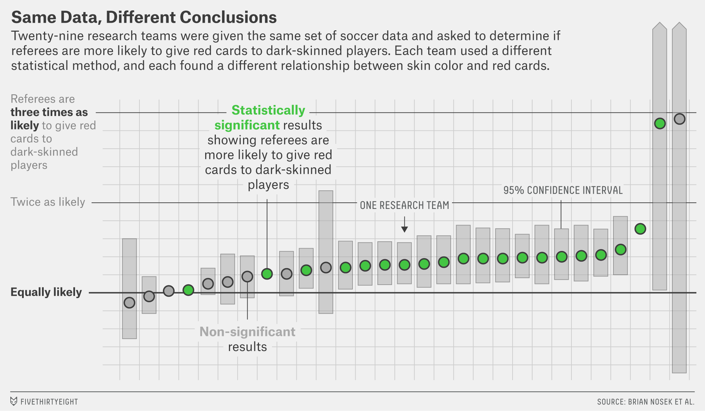
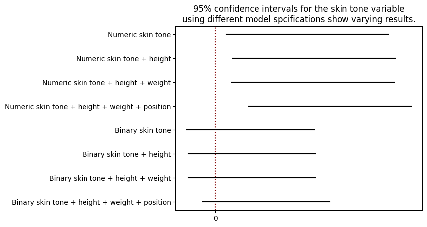

Week 12: A short note on reproducibility#
April 3, 2024#
Michael Jongho Moon
One of the evaluation criteria for your final projects is reproducibility of slides.
What is reproducibility?
import pandas as pd
import statsmodels.formula.api as smf
soccer = pd.read_csv("soccer.csv")
soccer.columns
soccer_player = soccer\
.groupby(["playerShort", "leagueCountry",
"height", "weight", "position",
"rater1", "rater2"])[["games", "redCards"]]\
.sum()\
.reset_index()
soccer_player["p_red_cards"] = soccer_player["redCards"] / soccer_player["games"]
soccer_player\
.rename(columns={"redCards": "n_red_cards",
"games": "n_games",
"leagueCountry": "league_country"},
inplace=True)
soccer_player = soccer_player[[
"p_red_cards", "rater1", "rater2",
"height", "weight", "position"
]]
midfielder = soccer_player["position"].str.match(".*Midfielder")
defender = soccer_player["position"].str.match(".*(B|b)ack")
goalkeeper = soccer_player["position"].str.match("Goalkeeper")
soccer_player.loc[~(midfielder | defender | goalkeeper), "position"] = "Attacker"
soccer_player.loc[midfielder, "position"] = "Midfielder"
soccer_player.loc[defender, "position"] = "Defender"
soccer_player.loc[goalkeeper, "position"] = "Goalkeeper"
soccer_player.to_csv("soccer_cleaned.csv", index=False)
Example: Many analysts, one data set#
A team of researchers crowdsourced analysts to investigate whether there is referee bias in soccer leagues against darker skinned players by analysing the number of red cards given to the players (Silberzahn et al. 2018).
Below is a simplified version of the data set provided to the analysts.
import pandas as pd
soccer = pd.read_csv("soccer_cleaned.csv")
soccer
soccer
rater1andrater2are skin tones of each player rated by 2 independent raters; 0 means very light and 5 means very dark.p_red_cardsis the proportion of games in which the player received a red card.
import numpy as np
soccer["skin_tone"] = (soccer["rater1"] + soccer["rater2"]) / 2
soccer["skin_tone_b"] = (soccer["skin_tone"] > .5) * 1
soccer["p_red_cards_log"] = np.log(soccer["p_red_cards"] + 1)
soccer
A simple model to look at their relationship would be the regression model with the following regression line:
import statsmodels.formula.api as smf
fit_1 = smf.ols("p_red_cards_log ~ skin_tone", data=soccer).fit()
fit_1.summary().tables[1]
print(fit_1.conf_int(alpha=.05)) # confidence intervals
# save confidence interval
ci_1 = fit_1.conf_int().loc["skin_tone"]
ci_1
With the provided data set, we could also fit models involving additional independent variables.
fit_2 = smf.ols("p_red_cards_log ~ skin_tone + height", data=soccer).fit()
fit_3 = smf.ols("p_red_cards_log ~ skin_tone + height + weight", data=soccer).fit()
fit_4 = smf.ols("p_red_cards_log ~ skin_tone + height + weight + position", data=soccer).fit()
ci_2 = fit_2.conf_int().loc["skin_tone"]
ci_3 = fit_3.conf_int().loc["skin_tone"]
ci_4 = fit_4.conf_int().loc["skin_tone"]
We could also use the binary version of the skin tone.
fit_1_b = smf.ols("p_red_cards_log ~ skin_tone_b", data=soccer).fit()
fit_2_b = smf.ols("p_red_cards_log ~ skin_tone_b + height", data=soccer).fit()
fit_3_b = smf.ols("p_red_cards_log ~ skin_tone_b + height + weight", data=soccer).fit()
fit_4_b = smf.ols("p_red_cards_log ~ skin_tone_b + height + weight + position", data=soccer).fit()
ci_1_b = fit_1_b.conf_int().loc["skin_tone_b"]
ci_2_b = fit_2_b.conf_int().loc["skin_tone_b"]
ci_3_b = fit_3_b.conf_int().loc["skin_tone_b"]
ci_4_b = fit_4_b.conf_int().loc["skin_tone_b"]
Using numeric skin tone rating
pd.DataFrame([ci_1, ci_2, ci_3, ci_4])\
.set_axis(["2.5%", "97.5%"], axis=1)\
.set_axis(["Skin tone only",
".. + height",
".. + weight",
".. + position"])
Using binary skin tone rating
pd.DataFrame([ci_1_b, ci_2_b, ci_3_b, ci_4_b])\
.set_axis(["2.5%", "97.5%"], axis=1)\
.set_axis(["Skin tone only",
".. + height",
".. + weight",
".. + position"])
Depending on the model used, we may arrive at a different conclusion about the relationshiop between a player’s skin tone and the occurrence of receiving a red card during a game.

Source: Christie Aschwanden. 2015. “Science isn’t broken” https://fivethirtyeight.com/features/science-isnt-broken/
29 research teams who participated in the project each conducted a unique analysis leading to 29 different results.
Some concluded statistically significant results; some didn’t.
All teams provided rationale for each of their analytical decisions such as variable inclusion, variable tranformation, model used, etc.
There is often, if not always, many reasonable ways to conduct data analysis given a data set to answer a research question.
It is important to be transparent and clear about your analysis.
Obscuring analysis your analysis procedures can hinder others from validating your work.
Reproducibility (being able to generate the same results using the same material and methods) and replicability (arriving at similar results using new data and methods) are key in integrity of scientific research.
Related work in ecology and evolutionary biology
Reproducibility and Repeatability in Ecology https://academic.oup.com/bioscience/article/56/12/958/221622
Questionable research practices in ecology and evolution https://doi.org/10.1371/journal.pone.0200303
Reproducibility trial: 246 biologists get different results from same data sets https://www-nature-com.myaccess.library.utoronto.ca/articles/d41586-023-03177-1 | UofT Library Link
There is a link to a project that is similar to the soccer example.
What does it mean for your project?#
Your TA will attempt to reproduce your slides using the Jupyter notebook (.ipynb) and data files you submit.
If your TA cannot run the .ipynb files you submit to reproduce your slides content then your group will receive 0; if the TA has to make minor changes to get it to run then your group will receive 1; and if it runs with no changes then your group will receive 2.
Help TAs!
The easiest method would be to place your data file(s) in the same folder as your notebook file and read the data file with the file name only.
If you must use a folder, use a relative path to the folder from the notebook file’s location. e.g.,
data/datafile.csvif your notebook file is inproject/notebook.ipynband data file is inproject/data/datafile.csv
One more tip for your slides#
Code for creating plots are often very long.
Displaying long lines of codes isn’t effective way of communicating your work on a slide presentation; especially for a time-limited video.
Include codes that generate and save plots as files (
plt.savefig()). Then, use markdown to load the saved images. You can “skip” the codes in the slide show but your notebooks will still be reproducible.
import matplotlib.pyplot as plt
plt.axvline(0, linestyle="dotted", color="maroon")
plt.plot(ci_1, [8, 8], "black")
plt.plot(ci_2, [7, 7], "black")
plt.plot(ci_3, [6, 6], "black")
plt.plot(ci_4, [5, 5], "black")
plt.plot(ci_1_b, [4, 4], "black")
plt.plot(ci_2_b, [3, 3], "black")
plt.plot(ci_3_b, [2, 2], "black")
plt.plot(ci_4_b, [1, 1], "black")
plt.yticks(ticks=np.arange(8) + 1,
labels=["Binary skin tone + height + weight + position",
"Binary skin tone + height + weight",
"Binary skin tone + height",
"Binary skin tone",
"Numeric skin tone + height + weight + position",
"Numeric skin tone + height + weight",
"Numeric skin tone + height",
"Numeric skin tone"])
plt.xticks(ticks=[0])
plt.title("95% confidence intervals for the skin tone variable\nusing different model spcifications show varying results.")
plt.savefig("fig.png", bbox_inches="tight") # bbox_inches="tight" avoids plot elements being cut off
plt.close();
